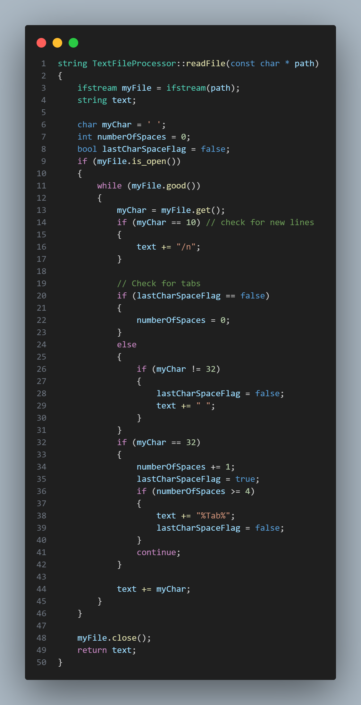
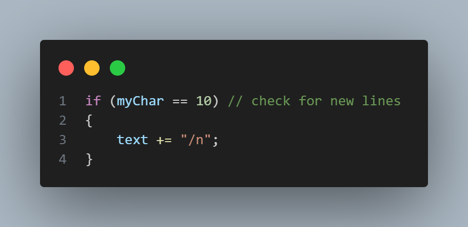
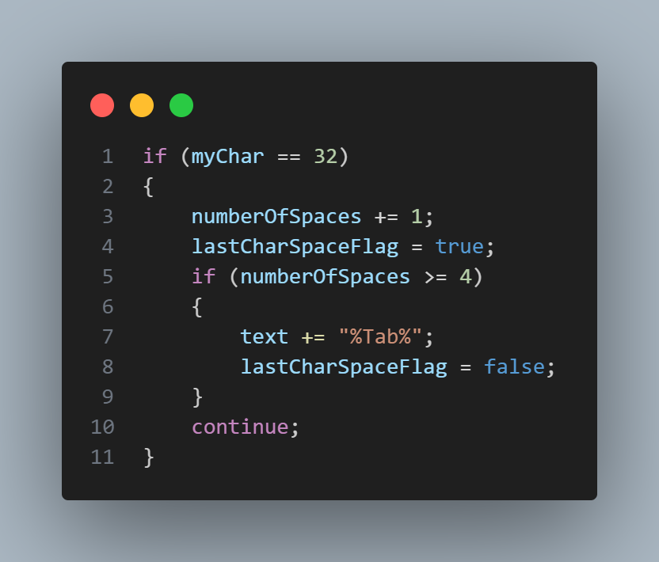
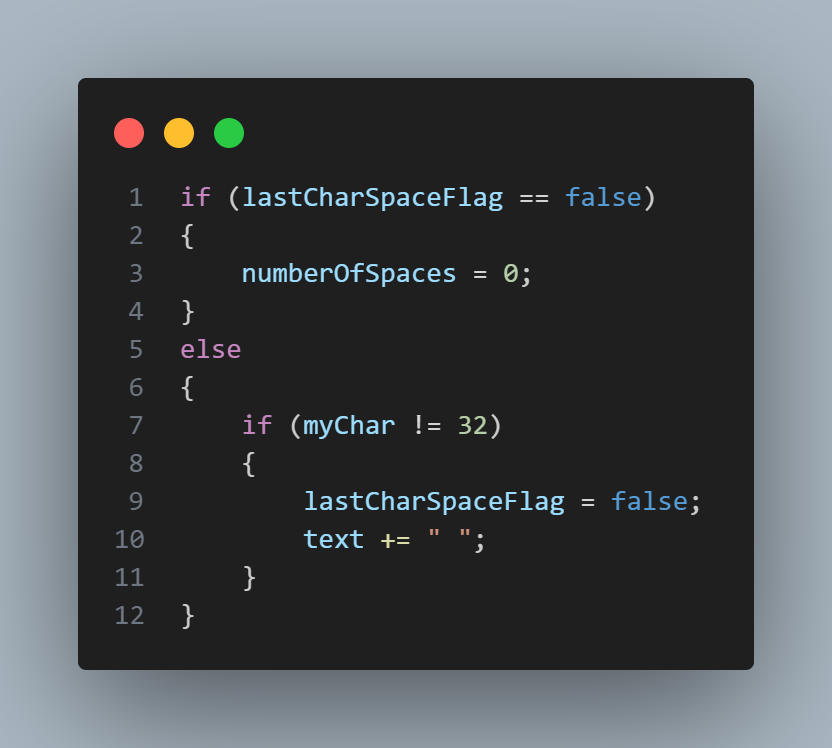
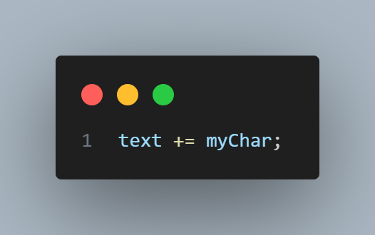
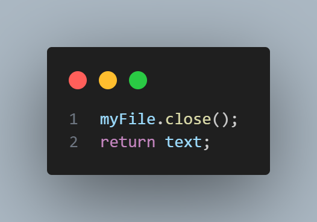
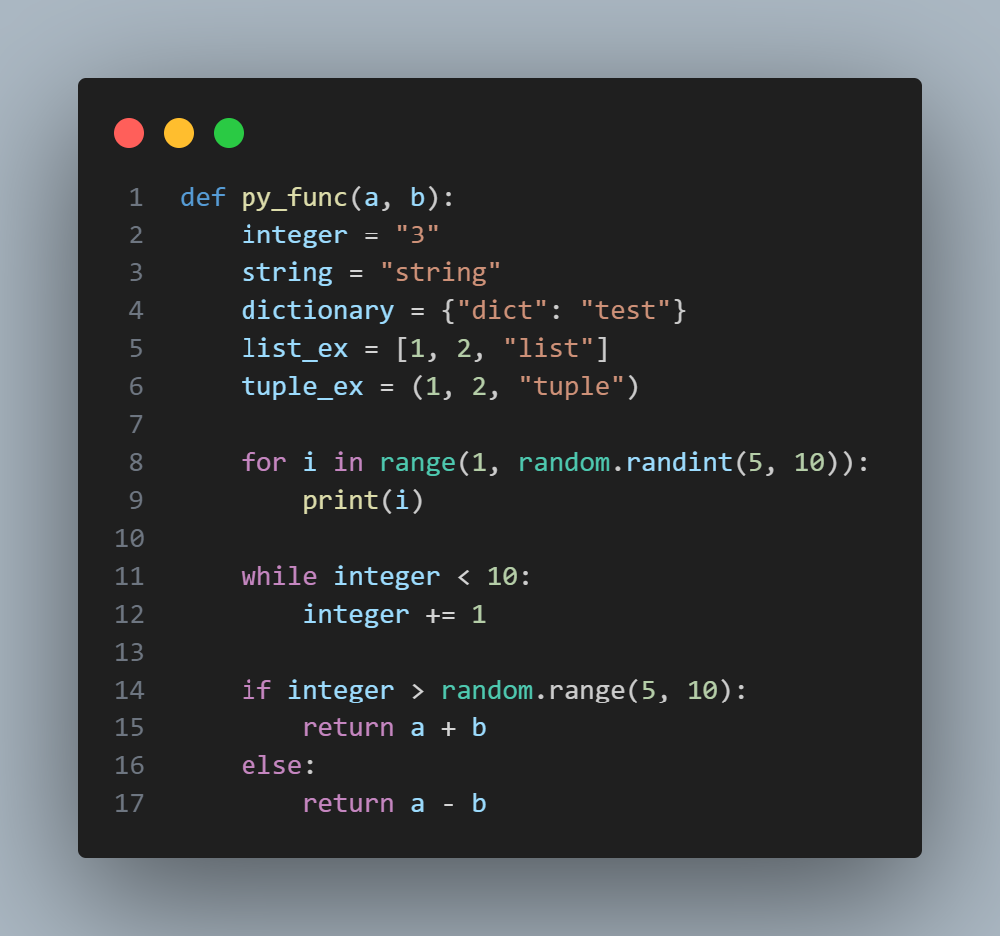
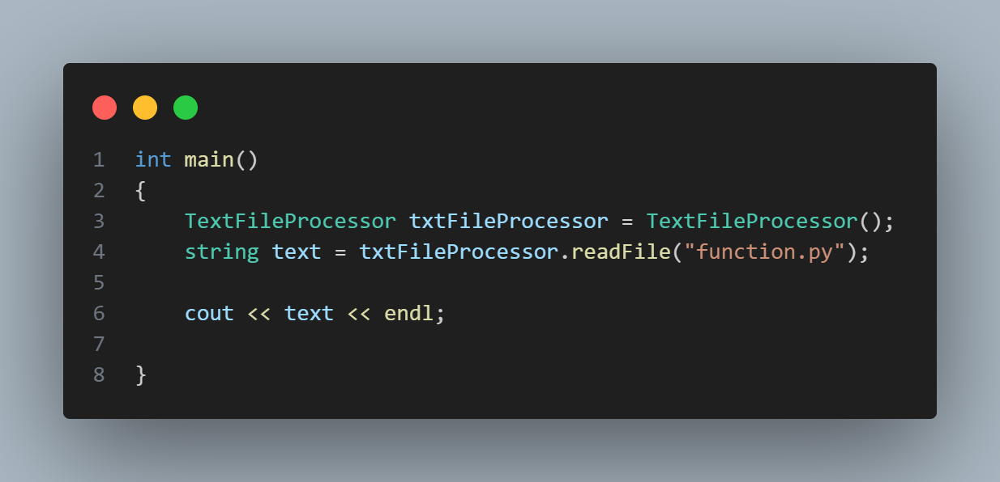
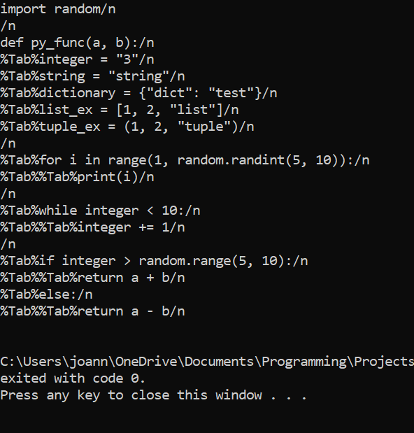

CodeGraphy First Steps
First chapter starts.
Recap
After I did some research I realized that CodeGraphy's functionality is like creating a programming language. I also got some idea on how to create a lexer and do lexical analysis a process where we chunk the code in to tokens. In this blog post I will try to start creating the foundation of CodeGraphy.
Text File Processor
Before we process any code we need to extract it from a file. I created a TextFileProcessor class in my new Visual Studio project. It has a readFile method that's fairly simple it extracts the text and add characters for white spaces like new lines and tabs. I may have to add more functionality in the future but this can work for a while.

I'm gonna walk you through the code.
First we create a IfStream object this stream will let us read the text in files.
Streams in c++ are like libraries that will help us on input and output. IfStream
handles the read process in files. I also initialized some variables that will help
us.
- string text will store the text in a string and this is what we return.
- char Char this will store the current character. For context we will go through each character and append them to the text string. This is very helpful to keep track of white spaces.
- int numberOfSpaces and bool lastCharSpaceFLag is used when we detect tabs because when reading with IfStream tabs are converted to spaces. we will get bach to this later
Next we will start a while loop. Each iteration we will get a character and process it. in the next lines we check if the character is equal to 10. 10 is the ASCII code for a new line. If it is a 10 we will add the characters "/n" to our string. We do this so we can know if the line is ended. This might be not so useful because we will still move through the string character by character. To be honest I just did this because I tested if I can detect white spaces and decided to keep it.
while checking for new lines might be unnecessary checking for tabs is. I noticed that IfStream converts tabs to spaces and we definitely need to know where tabs is because it's important in python syntax. The following block of code is responsible for this.
First we check if char is equal to 32 the ASCII value for a space. while on this if statement we don't add any characters to the string by calling continue keyword at our if statement. If it is a space we increment numberOfSpaces by 1 and set the lastCharSpaceFLag to true. after that we check if there are 4 consecutive spaces and if there is it's a tab so we substitute the character by %Tab%. %Tab% is much easier to track than 4 white spaces. After that we set the lastCharSpaceFLag to false and we go to the start of our loop.
This is the if else statement that preceeds the code block above. This if statement checks if the lastCharSpaceFLag is false and sets numberOfSpaces to 0. If lastCharSpaceFLag is true we check if our current char is not a space and if it is we set the lastCharSpaceFLag to false and add a space to our text. We do this because if we detect a space we don't add it to the text so if the series of white space is not a tab (not 4 consecutive spaces) we need to add the space.
lastly we add the char in the text after we pass it to the series of if statements above then we close the IfStream to avoid memory leaks and we return our text string.

Let's test it
I wrote a dummy python function to test the TextFileProcessor. The dummy python function is above and below is the main function that we will run. It just initialized a TextFileProcessor object and calls its readFile method with the python function path.
Output
Conclusion
I didn't expect this blog post to be that long considering the TextFileProcessor is pretty short. I think I'm gonna cut the blog post here and make another one for the lexer and tokens. It's almost done I just need to do some things and create a blog post. Actually the actual blog post is the one that takes time I created the TextFileProcessor for like 10 minutes and this took 2 hours. Anyways I'll be back.